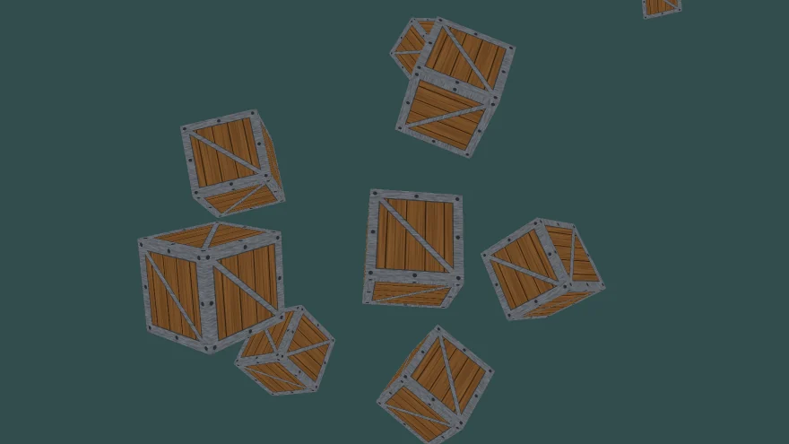

Getting Started
Camera#
examples/Sources/07-Camera, run with swift run Camera. Download all examples or see how to run them.A fixed view matrix shows a scene from one spot. A camera you can fly through the scene is a view matrix that is rebuilt every frame from a position and a direction, both driven by input.
The look-at matrix#
A camera is defined by where it is, what it looks at, and which way is up. From those three we derive three perpendicular axes and build a matrix that moves the world into the camera's frame. Add to Math.swift:
extension float4x4 {
/// Right-handed view matrix.
init(lookAt eye: Float3, center: Float3, up: Float3) {
let z = normalize(eye - center) // points backward, away from the target
let x = normalize(cross(up, z)) // right
let y = cross(z, x) // true up
self.init(columns: (
SIMD4<Float>(x.x, y.x, z.x, 0),
SIMD4<Float>(x.y, y.y, z.y, 0),
SIMD4<Float>(x.z, y.z, z.z, 0),
SIMD4<Float>(-dot(x, eye), -dot(y, eye), -dot(z, eye), 1)))
}
}
The rotation part lines the world up with the camera's axes, and the last column moves the camera to the origin. Try it by orbiting the scene:
let radius: Float = 10
let eye = Float3(sin(time) * radius, 0, cos(time) * radius)
uniforms.view = float4x4(lookAt: eye, center: [0, 0, 0], up: [0, 1, 0])
A fly camera#
For free movement, store a position and two angles. Yaw turns left and right, pitch looks up and down.
import simd
final class Camera {
var position = Float3(0, 0, 3)
var yaw: Float = -90 // degrees; -90 looks down -z
var pitch: Float = 0
var fov: Float = 45
var speed: Float = 2.5
var sensitivity: Float = 0.1
var front: Float3 {
let y = yaw.radians, p = pitch.radians
return normalize(Float3(cos(y) * cos(p), sin(p), sin(y) * cos(p)))
}
var right: Float3 { normalize(cross(front, [0, 1, 0])) }
var viewMatrix: float4x4 {
float4x4(lookAt: position, center: position + front, up: [0, 1, 0])
}
func move(forward: Float, strafe: Float, deltaTime: Float) {
position += front * forward * speed * deltaTime
position += right * strafe * speed * deltaTime
}
func rotate(deltaX: Float, deltaY: Float) {
yaw += deltaX * sensitivity
pitch += deltaY * sensitivity
pitch = min(max(pitch, -89), 89)
}
func zoom(_ amount: Float) {
fov = min(max(fov - amount, 1), 60)
}
}
front turns the two angles into a direction with basic trigonometry. Pitch is clamped just short of 90 degrees because looking straight up makes front parallel to the up vector, and the cross product in lookAt collapses.
Delta time#
Frames do not take equal time. Movement must be scaled by the time since the last frame, the delta time, or the camera speed would depend on the frame rate:
var lastFrameTime = CACurrentMediaTime()
// in draw(in:)
let now = CACurrentMediaTime()
let deltaTime = Float(now - lastFrameTime)
lastFrameTime = now
Input#
AppKit and UIKit deliver input as events, which is awkward for a game loop that wants to ask "is W down right now?". The GameController framework lets you poll the keyboard and mouse on both macOS and iPadOS:
import GameController
func updateCamera(deltaTime: Float) {
var forward: Float = 0
var strafe: Float = 0
if let keyboard = GCKeyboard.coalesced?.keyboardInput {
if keyboard.button(forKeyCode: .keyW)?.isPressed == true { forward += 1 }
if keyboard.button(forKeyCode: .keyS)?.isPressed == true { forward -= 1 }
if keyboard.button(forKeyCode: .keyD)?.isPressed == true { strafe += 1 }
if keyboard.button(forKeyCode: .keyA)?.isPressed == true { strafe -= 1 }
}
camera.move(forward: forward, strafe: strafe, deltaTime: deltaTime)
}
Mouse movement arrives through a handler that reports deltas. Register it once, for example in the renderer's init:
NotificationCenter.default.addObserver(forName: .GCMouseDidConnect, object: nil, queue: .main) { [weak self] note in
guard let mouse = note.object as? GCMouse else { return }
mouse.mouseInput?.mouseMovedHandler = { _, deltaX, deltaY in
self?.camera.rotate(deltaX: deltaX, deltaY: deltaY)
}
mouse.mouseInput?.scroll.valueChangedHandler = { _, _, y in
self?.camera.zoom(y)
}
}
deltaY is positive when the mouse moves up, so pitch increases and the camera looks up. On macOS the window must be key for keyboard polling to work; click it once after launch. The same framework reads game controllers through GCController, which is the natural choice on iPhone.
Putting it together#
let camera = Camera()
// in draw(in:)
updateCamera(deltaTime: deltaTime)
uniforms.view = camera.viewMatrix
uniforms.projection = float4x4(perspectiveFov: camera.fov.radians,
aspect: aspect, near: 0.1, far: 100)
Zoom is nothing more than narrowing the field of view. You can now fly around the ten cubes from the previous chapter.

Exercises#
- Turn the fly camera into a first-person camera that cannot leave the ground plane (keep
position.yfixed). - Add Q and E to move straight up and down.
- Hold Shift to triple the movement speed.